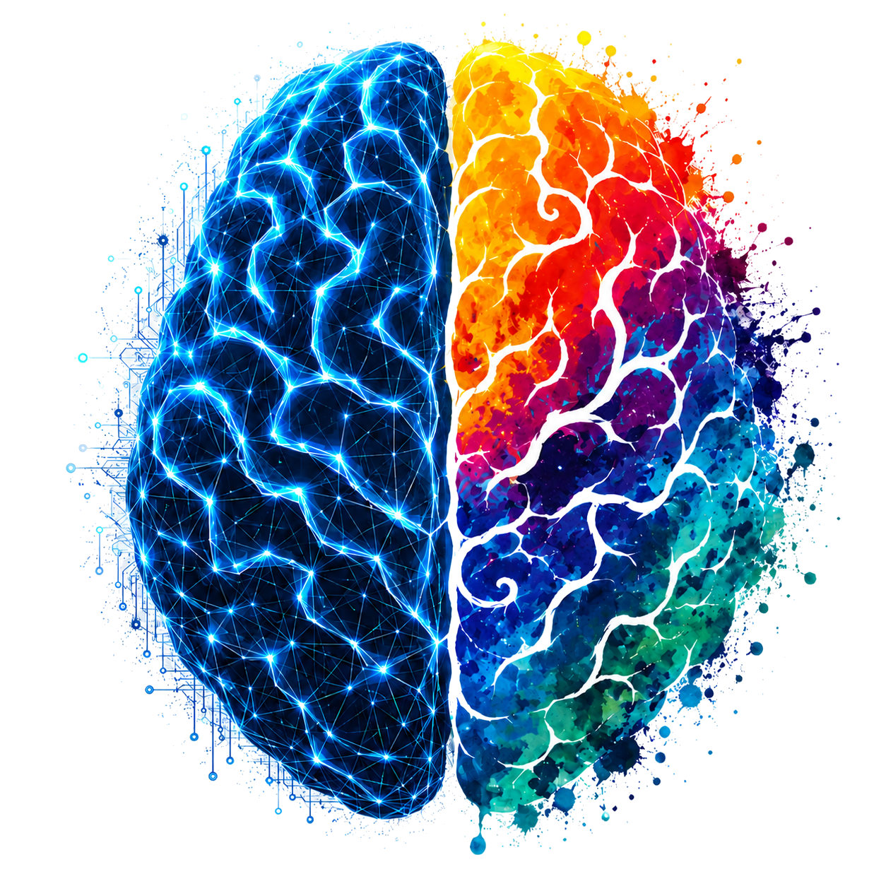

Palette pulled from the brain
Batch 1 · Directions
Direction A1
Thin Tech / Art Hybrid
Clean spaced uppercase (Inter) with a tiny color cue from the brain on the left edge. Structured like the tech side, color nods to the creative side.
Direction A3 · your recommendation
Numbered Signal Labels
Minimal numbered uppercase. The personality lives in the hover: an electric blue leader line draws in and the text shifts into the brain gradient.
↳ hover to see the electric line + gradient
Batch 2 · Options